채팅 분기 지도
갈라진 채팅의 연결을 PC에서는 가로, 모바일에서는 세로로 봐요. 이름을 찾고 지도를 확대·이동한 뒤 원하는 채팅을 열 수 있어요.
여는 곳 채팅 파일 관리 › 분기 지도SillyTavern을 위한 테마와 도구
5.9.2색과 글꼴은 내 취향으로.
번역, 메모, 북마크는 필요한 것만.
실리태번에 설치해서 쓰는 확장이에요.
PC에서도, 모바일에서도 같은 취향으로.
궁금한 기능을 누르면, 실제 쓰는 모습을 보여드려요.
팔레트를 고르거나, 최대 세 가지 색을 섞어요. 화이트와 나이트도 바꿀 수 있어요.
Blue Lemonade › 테마 › 색
색을 고르면 미리보기에 바로 보여요.
영상을 불러오지 못했어요. 위 사진으로 설정 화면을 확인해 주세요.
설정은 실리태번의 확장 탭 › Blue Lemonade에서 열어요. 내장 확장 18가지 자세히 알아보기 → 처음이라면 설치부터 →
2026.10.10 · 공개판의 소개용 가상 채팅으로 PC·모바일을 각각 새로 촬영했어요. 번역 영상은 설정 과정을 보여 줍니다.
색을 누르면 바로 바뀌어요. 글꼴과 형광펜도 직접 조절해 보세요.
번짐 0은 경계가 딱 나뉘고, 100은 끝에서 끝까지 천천히 번져요. 최대 3색 · 색 비중은 서로의 상대적인 넓이예요.
기본 색상으로 보여드려요.
나만의 색은 실리태번에서 직접 만들 수 있어요.
꾸미기 설정을 이 브라우저에 자동으로 기억해요.
색 · 글꼴 · 형광펜을 실리태번으로 가져갈 수 있어요.
한 판만이라며. 나이트 차례까지 있는 거야?
테마 색상을 불러오는 중이에요.
5.9.2 · 내장 도구
화면만 꾸며도 좋고, 쓰던 테마에 도구만 더해도 좋아요.
블루레몬에이드의 색과 글꼴을 적용하고, 필요한 내장 확장을 따로 켜서 사용해요.
위 버튼은 사용 방식 안내예요. 실제 모드는 실리태번에서 바꿔 주세요.
새 설정은 자동 읽기·미리 만들기·감정 분석이 꺼져 있어요. 기존 설정은 유지하며, 원할 때만 본문 필터 기본값 버튼으로 필터를 새 기본값에 맞추세요.
각 서비스의 요금과 지원 목소리는 계정에 따라 달라요. 기존 TTS 단독 확장을 쓰고 있다면 끄고 새로고침하세요.
도구별 화면과 사용법 보기 · 원본 안내: Character Assets · LLM Translator Custom · Prompt Panel
기존 단독 Prompt Panel·LLM 번역·CustomThemeStyleInputs를 사용 중이라면 같은 기능의 내장판과 동시에 켜지 마세요.
Blue Lemonade 설정에서 하나씩 바꾸고 같은 채팅을 다시 열어 비교해 보세요.
기기와 채팅의 길이, 그림·효과·켜 둔 확장에 따라 차이가 있어요. 원래 값을 기억해 두고 효과가 없는 변경은 돌려놓으세요.
실리태번이 설치되어 있다면, 모바일·PC 모두 같은 순서예요.
실리태번 위쪽 확장 탭에서
확장 설치를 눌러 주세요.
아래 주소를 복사해 넣고
설치를 눌러 주세요.
확장 탭에서 Blue Lemonade를 열고
먼저 좋아하는 색을 골라 보세요.
https://github.com/kgangkgang/blue-lemonade주소를 복사한 뒤 실리태번에 붙여 넣으세요.
ZIP을 풀어 실리태번의 data/default-user/extensions/blue-lemonade 폴더에 넣고 새로고침하세요. 사용자 프로필을 따로 쓰면 해당 프로필의 extensions 폴더에 넣어요.
폴더 바로 안에 manifest.json이 있어야 해요. 업데이트할 때도 같은 폴더에 덮어쓰면 기존 테마 설정은 남아요.
블루레몬에이드 테마를 쓰려면 다른 테마 확장을 꺼 주세요. 지금 테마를 유지하고 도구만 쓰려면 테마 › 기타 설정 › 사용 모드 › 확장만을 고르세요.
실리태번의 확장 탭 › Blue Lemonade 또는 입력창 옆 요술봉 › Blue Lemonade에서 열어요. 색은 테마 › 색, 글꼴은 글자 › 본문에서 바꿔요.
내장 도구는 필요한 것만 켜세요. AI 번역이나 외부 음성 서비스를 쓰려면 해당 서비스의 연결 설정이 필요하고, 이용 요금이 생길 수 있어요. 브라우저 내장 음성은 API 키 없이 쓸 수 있어요.
저장소 주소로 설치했다면 Blue Lemonade › 테마 › 업데이트에서 확인해요. ZIP으로 설치했다면 새 ZIP을 같은 폴더에 덮어써 주세요.
필요한 기능부터 하나씩
무슨 일을 하는지, 어디서 켜는지, 어떤 옵션을 고르면 되는지.
18개 도구 모두 PC·모바일 화면과 함께 차근차근 설명했어요.
테마만 사용 중이면 내장 확장이 꺼져 있어요. 테마 › 기타 설정 › 사용 모드에서 ‘테마 + 내장 확장’ 또는 ‘확장만’을 골라 주세요. 같은 기능의 단독 확장과 내장판은 하나만 켜요.
18개 도구 · 제목을 누르면 자세한 사용법이 열려요.
이럴 때 써요한국어로 입력해 AI에게는 영어로 보내고, 내 화면에서는 한국어 그대로 읽고 싶을 때.
여는 곳Blue Lemonade › 확장 › LLM 번역
LLM 번역에는 연결한 서비스의 요금이 생길 수 있어요. 자동 번역은 짧은 글로 확인한 뒤 켜세요. 아래 새 영상은 연결 후 사용할 설정 방법을 보여 주며, 실제 외부 API 번역 결과를 촬영한 영상은 아니에요.
이럴 때 써요나레이션·내 대사·캐릭터 대사의 목소리를 나누어 듣고 싶을 때.
여는 곳Blue Lemonade › 확장 › TTS
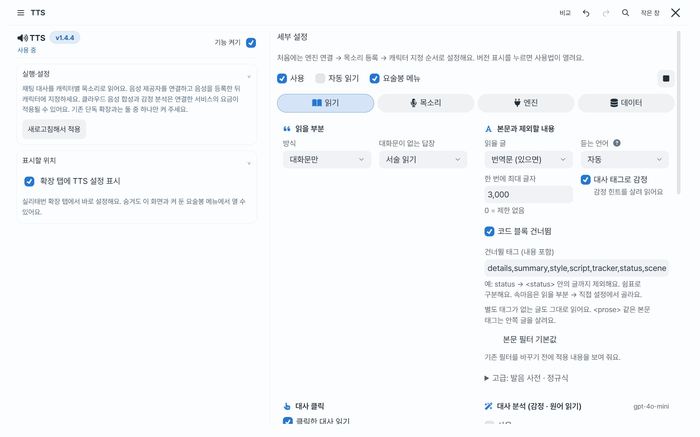
클라우드 음성 생성, 감정 분석, 듣는 언어 번역은 각각 요청이 생길 수 있어요. 엔진 선택만으로 목소리 이용 권한이 생기는 것은 아니에요. TTS 제목 옆 v1.5.2 버튼에서 소리 대본·효과음의 사용 순서와 출처를 볼 수 있어요. Blue Lemonade 설정 제목 옆 ©를 누르면 전체 출처·라이선스가 열려요.
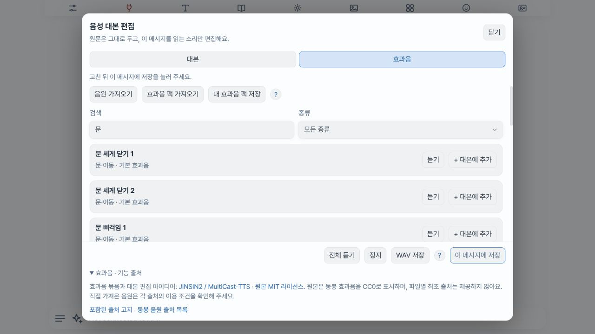
TTS 개발: Blue Lemonade · AGPL-3.0. 효과음 묶음과 대본 연출 참고: JINSIN2 / MultiCast-TTS, Copyright © 2026 JINSIN2 · MIT 전문. 반영 범위·변경 고지와 47개 음원의 원본 URL·해시를 보존했어요. 음원의 CC0는 원본 저장소의 표기이며, 개별 원음의 최초 제작자·출처·라이선스를 독립적으로 확인한 것은 아니에요.
추가 일상 효과음 16개: BigSoundBank의 Joseph SARDIN·cecilegatina 음원 12개(CC0 1.0), 공유마당 · 한국저작권위원회 음원 4개(CC BY 4.0). 단발은 한 동작으로, 지속음은 짧은 구간으로 편집하고 음량·페이드·MP3 형식을 조정했어요. 공유마당 음원이 들어간 결과를 재공유할 때는 제작자·원본·CC BY 4.0 링크·변경 표시도 남겨 주세요. 각 음원의 제목·제작자·원본·변경 기록과 전체 출처·라이선스를 확인할 수 있어요.
이럴 때 써요나중에 회수할 복선이나 캐릭터의 말투를 채팅하면서 바로 확인하고 싶을 때.
여는 곳Blue Lemonade › 확장 › 메모
메모 줄을 숨겨도 메모가 삭제되지는 않아요. 아래에 안 보이면 표시할 위치·귀속·태그 필터를 확인하세요. 제목 옆 버전 버튼에는 폴더와 연결 문법을 포함한 상세 도움말이 있어요.
이럴 때 써요긴 채팅에서 마음에 든 대사, 다시 읽을 장면, 중요한 설정을 찾기 쉽게 남길 때.
여는 곳Blue Lemonade › 확장 › 북마크
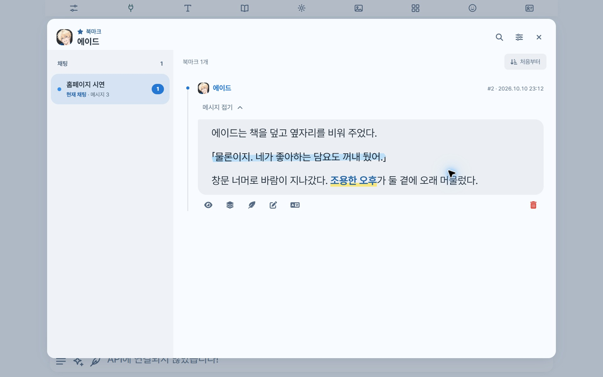
발췌 편집과 실제 원문 수정을 구분해 주세요.
이럴 때 써요좋아하는 장면을 예쁘게 저장하거나 이름을 가려 다른 사람에게 보여 주고 싶을 때.
여는 곳Blue Lemonade › 확장 › 채팅 캡처
긴 대화를 고해상도 영상으로 만들면 시간과 메모리를 많이 쓸 수 있어요. 모바일에서는 짧은 장면·가벼운 형식부터 시작해 보세요.
이럴 때 써요이름 표기를 통일하거나 같은 대화 속 낱말을 여러 곳에서 고칠 때.
여는 곳Blue Lemonade › 확장 › 단어 치환
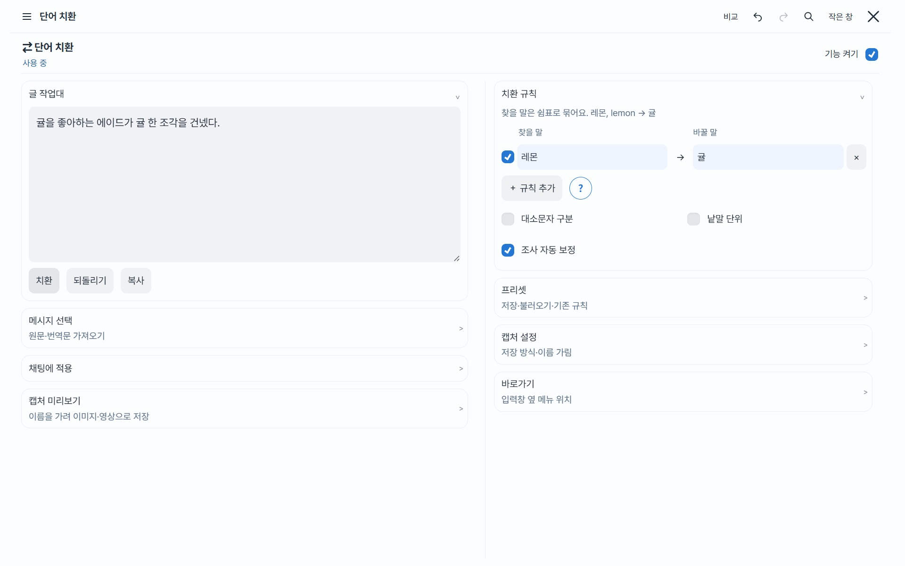
레몬, lemon → 귤처럼 여러 표기를 쉼표로 묶을 수 있어요.단어 치환은 내가 정한 글자를 바꾸는 도구예요. 뜻을 이해해 문장을 다시 쓰게 하려면 다시 쓰기, 언어를 바꾸려면 LLM 번역을 사용해요.
이럴 때 써요특정 버릇이나 묘사가 반복되지만 답변의 나머지 내용은 마음에 들 때.
여는 곳Blue Lemonade › 확장 › 다시 쓰기
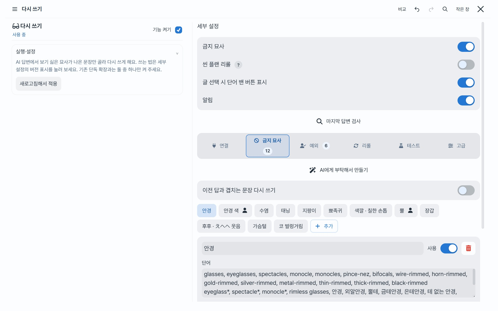
씬 플랜 기능은 해당 형식의 프리셋을 쓸 때 설정하세요. 고급 동작과 규칙 예시는 세부 설정의 버전 버튼에 있는 도움말에서도 확인할 수 있어요.
이럴 때 써요등장인물을 만나게 하거나 장면을 천천히 진행하도록 잠깐 방향을 정하고 싶을 때.
여는 곳Blue Lemonade › 확장 › 전개 지시
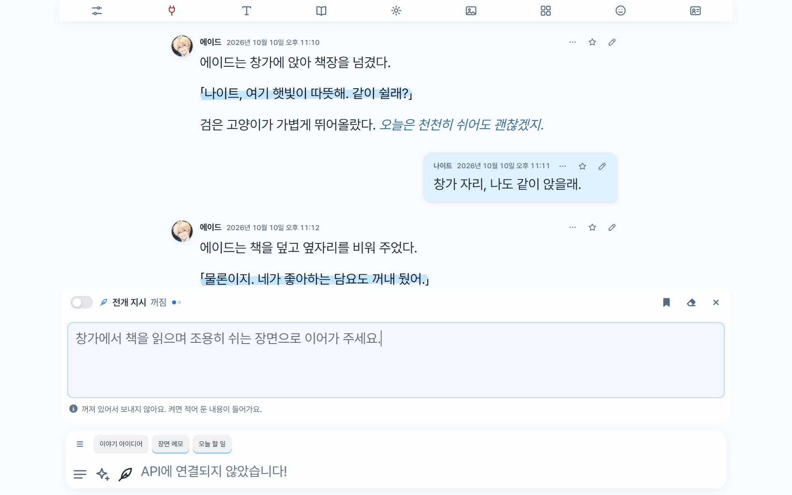
별도 모델을 호출하는 도구는 아니며 현재 채팅 요청에 지시가 추가돼요. 지시가 반영되는 정도는 프리셋과 모델에 따라 달라질 수 있어요.
이럴 때 써요AI가 웃거나 놀라는 장면에서 준비한 그림이 함께 나오게 하고 싶을 때.
여는 곳Blue Lemonade › 확장 › 캐릭터 에셋
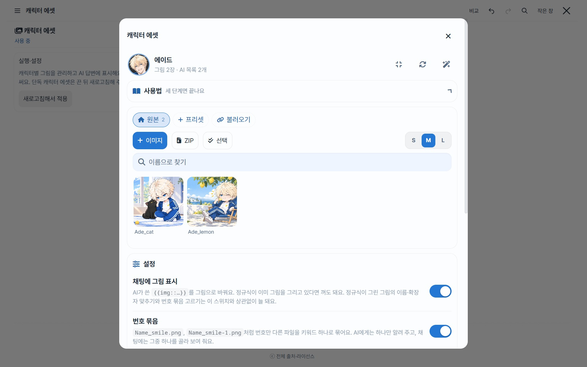
{{img_inprompt}}를 넣어요. 그림 규칙과 켜진 그림 목록이 AI에게 전달됩니다.{{img::Name_smile.png}}처럼 출력하면 그 자리에 그림이 나타나요.그림을 올리는 것만으로 AI가 반드시 출력하지는 않아요. 매크로가 실제 요청에 들어가는지와 그림 이름을 먼저 확인하세요. ZIP에 같은 이름이 있으면 기존 그림을 덮어쓸 수 있어요.
이럴 때 써요프리셋 토글이 무슨 역할인지 알고 필요한 지시문만 이해하고 싶을 때.
여는 곳Blue Lemonade › 확장 › 한글화 패널
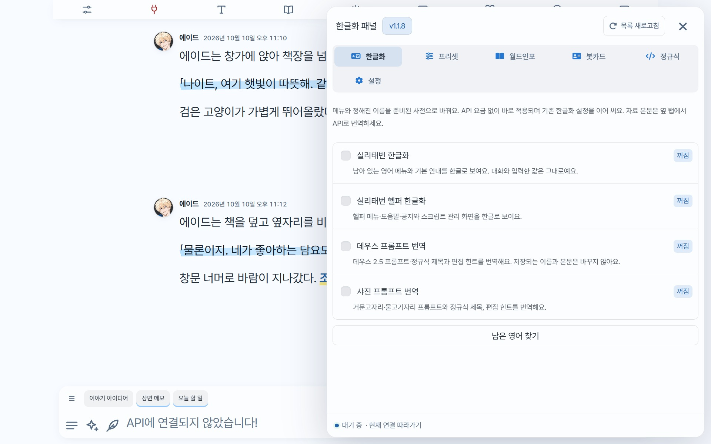
원본에 적용하기 전에는 실리태번에서 원본을 따로 내보내세요. 번역 메모리는 원본 전체 백업을 대신하지 않아요. 번역에는 서비스 요금이 생길 수 있어요.
이럴 때 써요받아 온 CSS에서 제작자가 열어 둔 글자 크기나 색을 코드 편집 없이 바꾸고 싶을 때.
여는 곳Blue Lemonade › 확장 › 커스텀 CSS 조절
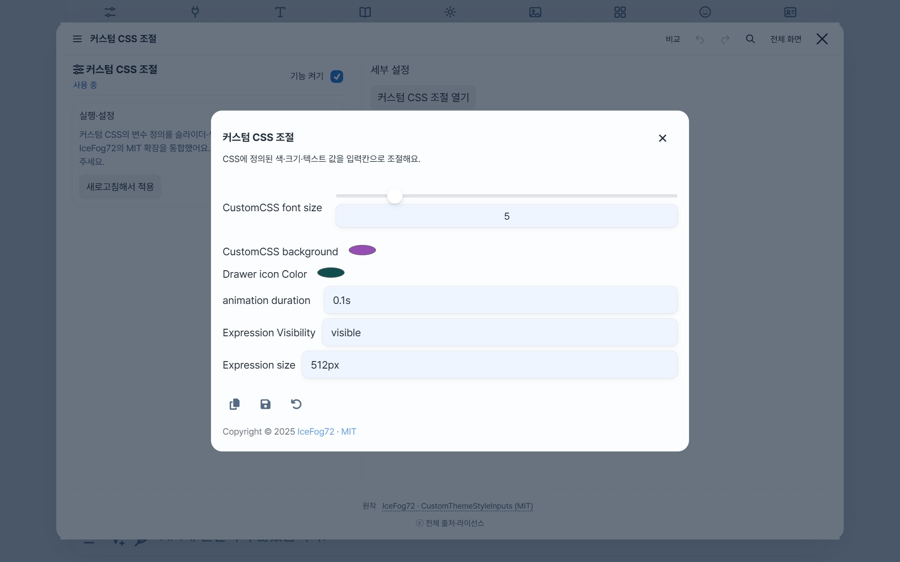
항목이 비어 있다면 먼저 CSS의 지원 여부를 확인하세요. 원작은 IceFog72의 CustomThemeStyleInputs이며 전체 출처는 페이지 아래에서 확인할 수 있어요.
이럴 때 써요서버가 지원하는 새 모델이 실리태번 선택창에 아직 없을 때.
여는 곳Blue Lemonade › 확장 › 모델 관리 › 모델 등록
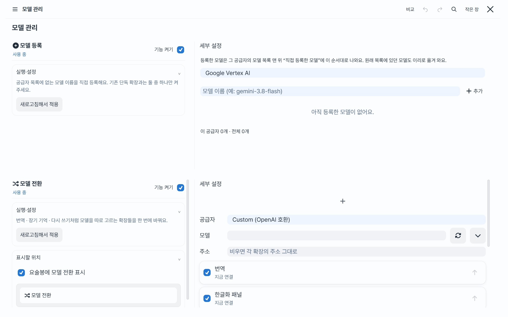
모델을 등록해도 서비스 이용 권한·요금제·서버 지원이 생기지는 않아요. 등록은 됐는데 요청이 실패하면 ID와 공급자의 지원 여부를 확인하세요.
이럴 때 써요번역과 다시 쓰기 등에서 쓰는 모델을 각각 들어가 바꾸기 번거로울 때.
여는 곳Blue Lemonade › 확장 › 모델 관리 › 모델 전환

모델 전환은 API 키를 발급하거나 모델을 설치하는 기능이 아니에요. 서비스 연결을 먼저 준비하고, 쓰지 않는 대상은 체크에서 빼 주세요.
이럴 때 써요매번 긴 확장 목록에서 번역·메모·TTS를 찾느라 내려가야 할 때.
여는 곳Blue Lemonade › 확장 › 확장 순서
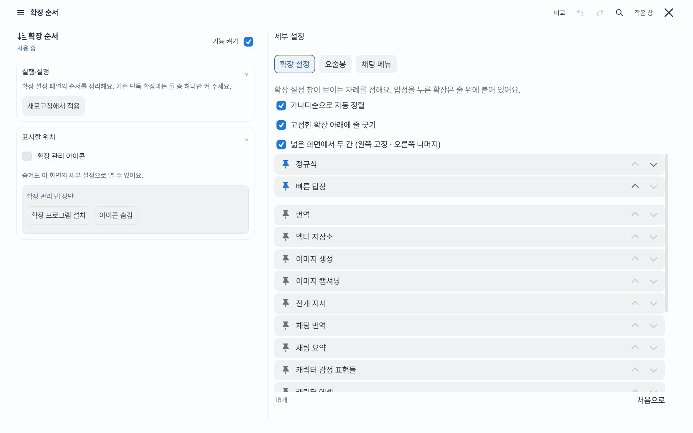
설정이 화면에 보이는 순서를 정하는 기능이에요. 확장의 실행 순서나 성능 우선순위를 바꾸는 설정은 아니에요.
이럴 때 써요긴 채팅에서 스크롤이 버벅이거나 응답이 어디서 기다리는지 알고 싶을 때.
여는 곳Blue Lemonade › 확장 › 성능 보조

모델의 생성 속도나 네트워크 속도를 높이는 기능은 아니에요. 화면·저장 처리와 외부 서비스 대기를 구분해서 확인해 주세요.
이럴 때 써요쓰지 않는 상태창·선택지 모듈의 정규식까지 계속 실행되는 것을 줄이고 싶을 때.
여는 곳Blue Lemonade › 확장 › 성능 보조 › 프롬프트 연동 정규식
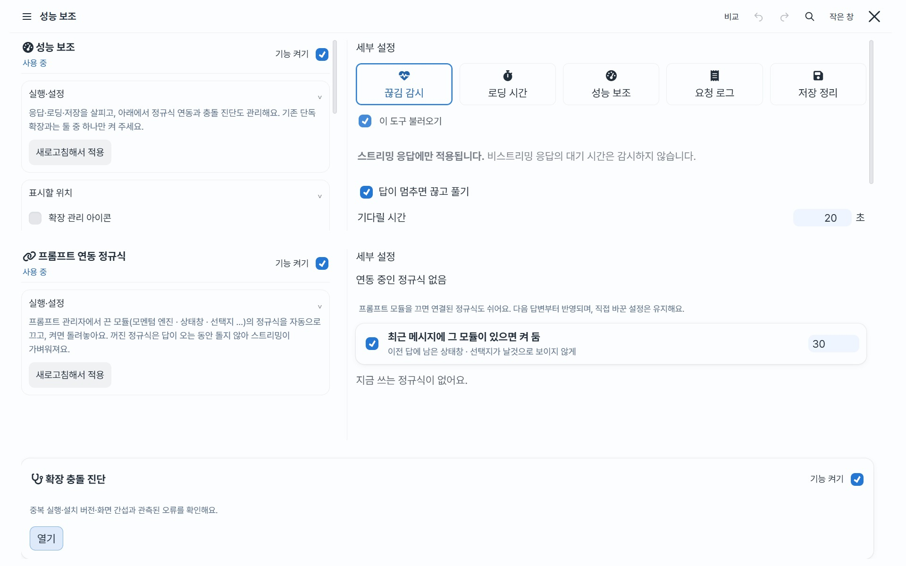
정규식이 꺼지면 해당 결과를 꾸미는 표시도 사라질 수 있어요. 기존 상태창을 읽어야 한다면 최근 메시지 유지 옵션을 함께 사용해요.
이럴 때 써요버튼이 두 개 생기거나 내장 기능이 대기 중이라고 나올 때.
여는 곳Blue Lemonade › 확장 › 성능 보조 › 확장 충돌 진단
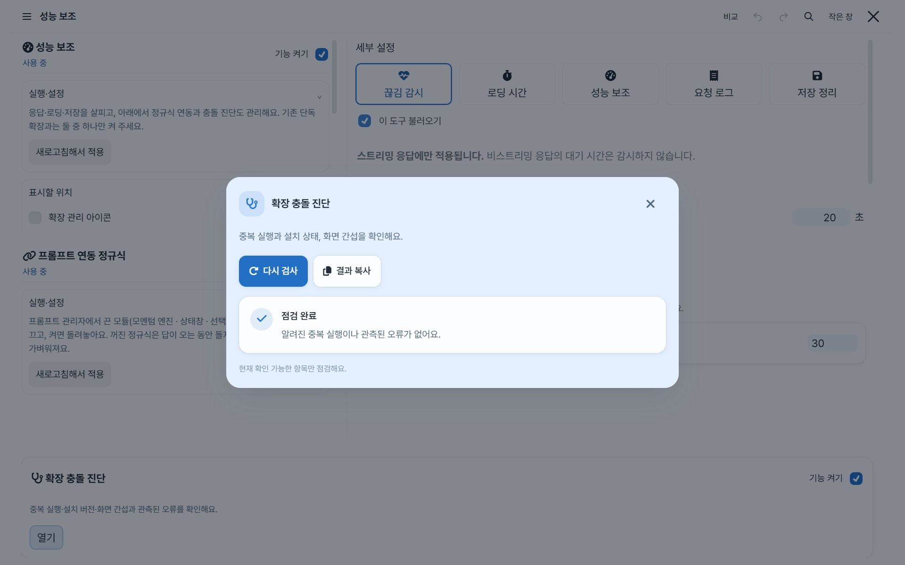
진단 창을 여는 것만으로 확장을 삭제하거나 모든 문제를 자동으로 고치지는 않아요. 내장 기능을 켰다면 별도의 같은 확장이 켜져 있지 않은지 먼저 확인해 주세요.
이럴 때 써요확장 ZIP을 설치·업데이트하거나, 설치한 확장을 지우고 싶을 때.
여는 곳Blue Lemonade › 확장 › ZIP 설치 · 켠 뒤 새로고침하면 요술봉 › ZIP 설치에서도 열 수 있어요.
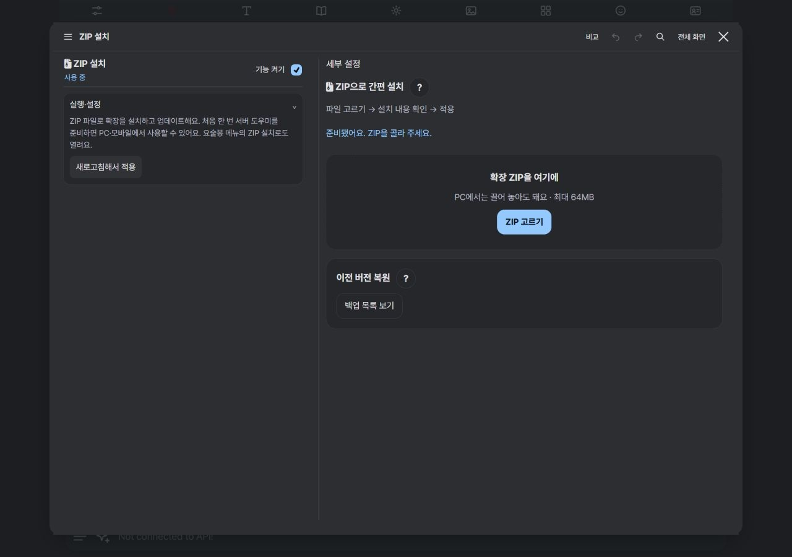
삭제 기능은 도우미 1.1.0부터 지원해요. 이전 도우미를 쓰면 테마 업데이트 후 아래 준비 과정을 한 번 더 진행해요.
server-plugin/setup-windows.cmd를 두 번 눌러요. Termux 등은 도우미 준비 안내의 명령을 따라 주세요.업데이트 전 폴더 전체를 백업해요. 백업 복원 → 백업 목록 보기에서 되돌릴 수 있고, 복원 직전 상태도 남겨요. ZIP에 없는 기존 파일과 확장의 켜짐·꺼짐 설정은 유지해요.
GitHub에서 받은 바깥 폴더가 있는 ZIP도 인식해요. ZIP은 최대 64MB예요. 준비한 같은 서버에 접속하면 PC·모바일에서 사용할 수 있어요. 서버가 켜져 있고 접속 가능한 상태여야 해요.
확장 폴더 전체를 백업으로 보관하며 채팅·설정은 남아요. 백업이 남으므로 디스크 공간을 비우는 기능은 아니에요. 공용 확장과 블루레몬에이드 자체는 여기서 삭제하지 않아요.
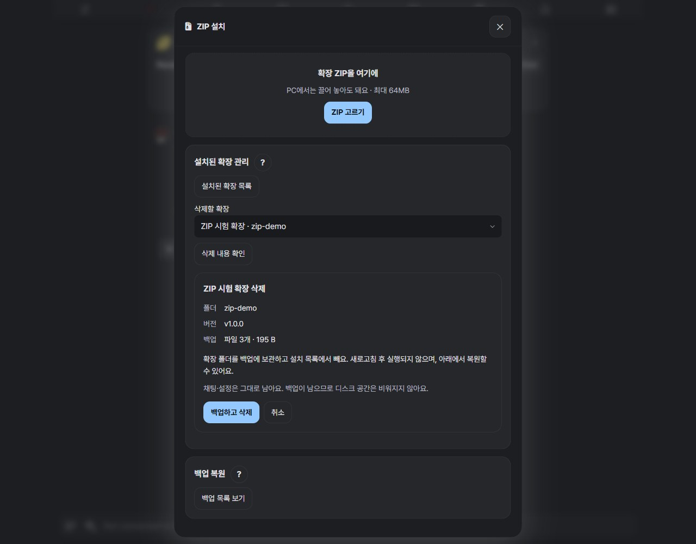
관리자 계정의 개인 확장 폴더에 설치해요. 서버 플러그인이나 별도 npm 설치가 필요한 확장은 제작자의 안내를 따라 주세요. 믿을 수 있는 ZIP을 골라 주세요. 백업은 자동 삭제하지 않아요. 화면의 ? 버튼에서도 단계별 설명을 볼 수 있어요.
맞는 사용법이 없어요. 더 짧은 낱말로 찾아보거나 검색을 지워 보세요.
테마의 색·글자·프로필·날씨까지 찾으려면 전체 기능 검색을 이용해 주세요. 원작자와 라이선스는 전체 출처에 정리되어 있어요.
121가지 기능을 사진·영상과 함께 알아보세요.
궁금한 묶음을 펼치거나 이름을 검색해 보세요. 모든 기능에 PC·모바일 예시와 여는 곳을 붙였어요. 사진을 누르면 크게 볼 수 있어요. 5.9.2 기준.
2026.10.10 새로 촬영한 공개용 예시예요. 설정 위치를 보여 주는 사진에는 설명을 붙였고, 서비스 연결이 필요한 기능은 설정 화면으로 안내해요.
121가지 기능 안내
갈라진 채팅의 연결을 PC에서는 가로, 모바일에서는 세로로 봐요. 이름을 찾고 지도를 확대·이동한 뒤 원하는 채팅을 열 수 있어요.
여는 곳 채팅 파일 관리 › 분기 지도알려진 중복 실행·설치 버전·화면 간섭과 오류를 살펴보고, 대화와 키를 제외한 진단을 복사해요.
여는 곳 확장 › 성능 보조 › 충돌 진단음성 엔진과 목소리를 등록해 캐릭터별로 채팅을 읽어요. 키를 넣고 연결 확인을 하면 그 계정의 내 목소리가 바로 들어와요. 재생 중 표시는 색깔만·색깔과 밑줄·밑줄만 중에서 골라요.
엔진 설정의 키 줄 아래에서 남은 글자·크레딧이나 이번 달 쓴 양을 봐요. 거의 다 쓰면 주의색으로 바뀌어요.
여는 곳 확장 › TTS › 엔진 · 목소리 · 읽기대사 분석 API를 따로 골라 대사의 감정과 말하는 사람을 알아내요. 대사 색이나 이름표가 없는 대사도 앞뒤 맥락으로 누구 말인지 골라 그 캐릭터 목소리로 읽어요.
감정 세기(약하게·보통·강하게)와 속마음(속삭임·일반)을 골라요. ElevenLabs도 ‘약하게’면 차분하게 읽어요. 번역을 접기·원문 먼저·펼침으로 볼 때도 번역문만 읽어요.
여는 곳 확장 › TTS › 읽기 › 대사 분석캐릭터별 목소리 줄에서 목소리와 감정 세기를 바로 바꿔요. 감정 세기는 전체·약·보통·강 가운데 골라, 대부분은 차분하게 두고 몇 명만 살릴 수 있어요. 다른 엔진의 목소리를 고르면 그 캐릭터만 그 엔진으로 읽어요.
대화 색이 없는 채팅도 ‘이 채팅의 캐릭터’에 최근 나온 캐릭터가 줄로 나와요. 같은 사람을 다른 색으로 칠해도 한 줄로 모아요. 목소리를 안 정한 단역은 성별·나이에 맞는 기본 목소리로 읽고, ‘나’도 자동으로 둘 수 있어요.
여는 곳 확장 › TTS › 목소리 › 캐릭터별 목소리 · 대화 색실리태번·헬퍼 메뉴, 데우스·샤진 이름 번역을 API 없이 켜고 꺼요. 자료와 정규식 이름은 필요한 것만 API로 번역해요. 버전 버튼에서 사용방법을 보고 설명도 숨길 수 있어요.
여는 곳 확장 › 한글화 패널펼친 채팅 카드 맨 아래에서 바로 접어요. 별도 헬퍼 스크립트 없이 켜고 끌 수 있어요.
여는 곳 채팅 › 기타테마 + 확장·테마만·확장만 중 골라요. 기존 설정은 보관하며 선택한 모드로 새로고침해요.
여는 곳 테마 › 기타 설정 › 사용 모드켜면 확장 설정창과 지원되는 팝업이 확장이 정한 원래 글자·배경색을 써요. 기본은 꺼져 있어요.
여는 곳 테마 › 기타 설정기존 설정·용어집·번역 기록을 이어 쓰고 확장 탭의 설정 표시를 선택해요.
용어집은 모델이 같은 이름을 조금 다른 가타카나로 적어도(バイオレット·ヴァイオレット처럼) 그 줄을 찾아 넣어요.
여는 곳 확장 › LLM 번역번역·다시 쓰기·한글화 패널·모델 전환·모델 등록·TTS의 모델 칸이 공급자가 주는 목록을 받아 와 새 모델이 바로 보여요. 설정을 열 때 하루에 한 번 받고, ↻로 바로 받을 수도 있어요. 골라 둔 모델은 목록에서 빠져도 그대로예요.
여는 곳 각 확장의 모델 칸 옆 ↻CSS 변수로 정의된 색·크기·값을 입력칸에서 바꿔요.
여는 곳 확장 › 커스텀 CSS 조절확장 설정과 요술봉·채팅 메뉴의 개별 항목 순서를 바꿔요.
여는 곳 확장 › 확장 순서블루레몬에이드만 업데이트하고 실행 중인 파일과 설치 파일을 비교해요. 점검 결과와 자세한 파일 정보는 나눠서 볼 수 있어요.
여는 곳 테마 › 업데이트새 버전이 나오면 확장 목록과 설정 창 제목의 버전 표시가 노랗게 빛나요. 누르면 지금 버전부터 바뀐 내역을 보고 바로 업데이트해요.
ZIP으로 설치했으면 폴더를 백업해 두고 GitHub 링크 설치로 바꿔 업데이트해요. 설정과 대화는 그대로예요. 확인은 6시간에 한 번 버전 숫자만 받아요.
여는 곳 테마 › 업데이트 › 새 버전 자동 확인제목·구분선·인용문·목록·링크·표 등 11가지 설정을 한 화면에서 조절하고 전용 미리보기로 비교해요. 구분선은 점 세 개나 선으로 고를 수 있어요.
여는 곳 글자 › 마크다운글자를 키우거나 두껍게 하고, 글자 사이를 조여 한눈에 들어오는 밀도를 맞춰요.
여는 곳 글자 › 본문줄과 줄 사이를 넓히거나 좁혀, 글의 줄 간격을 조절해요.
여는 곳 글자 › 본문문단 사이 여백과 첫 줄 들여쓰기를 따로 골라 설정해요.
여는 곳 글자 › 문단왼쪽 정렬, 낱말을 유지하는 양쪽 정렬, 낱말도 끊어 채우는 양쪽 정렬을 골라요.
여는 곳 글자 › 문단폰에서는 가장자리 여유를, PC에서는 한 줄이 너무 길어지지 않도록 최대 폭을 맞춰요.
여는 곳 글자 › 문단본문·대사·메뉴·속마음·강조·코드의 글꼴, 크기, 굵기, 자간을 따로 바꿔요. 본문 설정을 따라가게 할 수도 있어요.
여는 곳 글자 › 각 역할한국어·영어·일본어·중국어 글꼴을 따로 지정해요. 한자를 어느 언어의 글꼴로 보여 줄지도 선택해요.
여는 곳 글자 › 각 역할 › 글꼴이름 검색과 분류로 글꼴을 찾고 미리 봐요. 구글 폰트, CSS 링크, WOFF·WOFF2·TTF·OTF 파일도 추가할 수 있어요.
여는 곳 글자 › 글꼴 목록형광펜·전체 칠·굵게·색·없음 중 선택해요. 대사 글자색과 형광펜 색도 따로 맞춰요.
여는 곳 글자 › 대사펜 자국, 끝이 반듯한 직사각형, 끝이 둥근 알약 중에 골라 칠해요. 반듯하게 또는 비스듬하게, 가운데 강조와 아래쪽 밑줄 느낌도 골라요.
여는 곳 글자 › 대사속마음은 기울임을 끄고 색으로만 구분할 수 있어요. 강조는 별도 색으로, 코드는 원하는 글꼴로 읽어요.
여는 곳 글자 › 속마음·강조·코드그림자를 넣을 역할을 고르고 색·투명도·각도·거리·퍼짐을 조절해요. 본문 전체 외곽선은 색·두께·진하기를 바꿔요.
여는 곳 글자 › 그림자 · 외곽선글자 크기·문단 간격·여백·프로필 배치를 기기별로 저장해요. 색과 글꼴 선택은 함께 써요.
여는 곳 글자 › 문단블루·레몬·리얼 블랙·멜론·자몽·피치·라벤더·딸기·민트·오렌지·우드·수박의 밝고 어두운 모드를 골라요. 위 색상 미리보기에서 바로 비교할 수 있어요.
여는 곳 테마 › 색바탕에 섞을 테마색의 농도를 골라요. 화이트는 0.5~20%, 나이트는 1~20%로 밝기마다 따로 저장하고, 직접 고친 배경색은 그대로 둬요.
여는 곳 테마 › 색 › 미리보기 옆한 가지부터 세 가지까지 에이드로 화면의 면과 형광펜을 함께 섞어요. 누른 순서대로 2·3번째 색을 더하고, 방향 0~360도, 번짐, 색별 비중을 고르고, 라이트·나이트를 따로 저장해요.
여는 곳 테마 › 색 › 에이드 혼합하기본문·대사·속마음·강조·프로필 이름에 따로 그라데이션을 켜요. 전체 혼합을 켜도 글자는 기본 단색을 유지해요.
여는 곳 테마 › 색 고치기기기의 다크 모드를 따르거나, 화이트와 나이트로 바뀔 시간을 직접 정해요.
여는 곳 테마 › 색 › 자동바탕·패널·글자·포인트색을 섞어 이름을 붙여요. 화이트·나이트 한 쌍을 24개까지 보관하고 불러오거나 편집해요.
여는 곳 테마 › 색 › 커스텀 에이드 만들기본문·대사·속마음·강조·보조 글자, 메뉴·입력칸·말풍선, 형광펜·그림자 색을 바꿔요. 색은 테마마다 따로 저장돼요.
여는 곳 테마 › 색 고치기이미지의 대표 색과 확대경으로 짚은 색을 골라요. 최근 사용한 색도 다시 쓸 수 있어요.
여는 곳 색 고르기 팝업소설책·메신저·또렷하게·처음 모습으로 글자와 채팅 모양을 한 번에 바꿔요. 고른 테마 색은 유지돼요.
여는 곳 테마 › 스타일현재 색·글꼴·글자·채팅·이미지 모습을 최대 20개까지 저장해요. 이름을 바꾸거나 지금 모습으로 갱신할 수 있어요.
여는 곳 테마 › 스타일저장한 스타일을 캐릭터나 그룹에 연결하면 그 채팅을 열 때 자동으로 입혀져요.
여는 곳 테마 › 스타일스타일을 코드나 파일로 주고받고, 방금 입힌 스타일은 되돌릴 수 있어요.
여는 곳 테마 › 스타일말풍선·카드·테이블·글자만 중 골라요. 내 메시지의 글자 크기와 진하기도 따로 조절해요.
여는 곳 채팅 › 메시지이름과 시간, 이름만, 모두 숨김을 선택해요. 아바타를 숨기면 채팅 이미지를 더 넓게 볼 수 있어요.
여는 곳 채팅 › 메시지선 아이콘과 기본 아이콘을 고르고, 채팅 뒤 배경 그림을 비추거나 깨끗한 테마 바탕으로 읽어요.
여는 곳 채팅 › 화면모델·프리셋 등의 긴 목록을 테마 팝업으로 보여 줘요. 끄면 기기의 기본 선택 목록을 사용해요.
여는 곳 채팅 › 화면실리태번 설정의 색 칸에서도 테마의 색 고르기를 사용할 수 있어요.
여는 곳 채팅 › 화면스트리밍으로 들어오는 새 글자가 부드럽게 나타나요. 실리태번 기본 페이드 인이 켜져 있으면 이 효과는 쉬어요.
여는 곳 채팅 › 화면퀵 리플라이를 입력창 위나 아래에 놓고, 가로 또는 세로로 넘겨요. 세로는 보이는 줄을 1~4줄로 정해요.
여는 곳 채팅 › 화면 › 퀵 리플라이Shift 없이 휠로 QR을 옆으로 넘기거나 마우스로 끌어요. 멈출 때 버튼이 가지런히 맞춰져요.
여는 곳 퀵 리플라이 줄돋보기에서 이름·내용·하위 세트를 검색해요. 채팅 › 화면 › 퀵 리플라이의 QR 검색 버튼을 끄면 빠른 답장은 유지한 채 돋보기만 숨길 수 있어요.
여는 곳 퀵 리플라이 › 돋보기버튼 전체로 하위 목록을 열고 제목도 버튼 옆에서 확인해요. 긴 목록은 창 안에서 스크롤하며 스크롤바 색은 테마를 따라가요.
여는 곳 하위 세트가 연결된 퀵 리플라이폰에서 아래로 읽으면 상단 바와 입력창이 숨고, 살짝 올리거나 누르면 다시 나타나요.
여는 곳 채팅 › 화면 › 폰입력창 가까이에 스와이프·사칭·이어 쓰기·다시 생성을 놓아요. 필요한 버튼만 켤 수 있어요.
여는 곳 채팅 › 화면 › 폰메시지에 지정된 색을 테마색으로 통일하거나, 원래 색상을 살리고 채도·밝기만 맞춰요. 형광펜 색 모드의 띠도 같은 방식으로 맞추고, 글자·형광펜 톤을 화이트·나이트 따로 정해요.
여는 곳 프롬프트 › 데우스 엑스 마키나 › 색 통일배경 이미지를 비칠 때 채팅 영역의 바탕을 0~100%로 골라요. 내 메시지 면도 같은 농도를 따라가요. 100이면 채팅 영역과 입력창 둘레를 테마 바탕색으로 완전히 덮어서, 배경 그림 색과 상관없이 글자가 잘 보여요.
여는 곳 채팅 › 화면 › 채팅 바탕 농도메시지의 ··· 메뉴 안 버튼 중 자주 쓰는 것을 골라 메뉴 밖에 늘 보이게 해요. 번역 같은 다른 확장의 버튼도 고를 수 있고, 풀면 원래 자리로 돌아가요. ··· 메뉴 안에서 버튼을 길게 누르면 그 자리에서 바로 고정하거나 풀 수 있어요.
여는 곳 채팅 › 화면 › 메시지 버튼답을 기다리는 동안 다른 앱을 봐도 생성과 자동 번역이 멈추지 않게 해요. 보내기 · 스와이프를 누를 때 켜지고, 끝나면 꺼져요.
기본은 창 없이 버티는 방식이고, 안 통하는 폰에서는 진행 상황이 보이는 작은 창(PIP) 방식을 골라요.
여는 곳 채팅 › 화면 › 폰컨텍스트에서 뺀 메시지(눈 감은 아이콘)를 옅게 보여 줘요. 진하기와 흑백을 슬라이더로 정하고, 마우스를 올리면(폰에서는 누르는 동안) 원래대로 진해져요. 기본은 꺼져 있어요.
여는 곳 채팅 › 화면실리태번 ‘모델 추론 요청’을 끄면 이미 있는 메시지의 추론 칸도 숨겨요. 다시 켜면 보이고, 추론을 고치는 중에는 그대로 둬요.
여는 곳 채팅 › 화면켜면 페르소나 본문 칸이 세로로 늘어나 긴 설명도 편하게 고쳐요. 끄면 원래 높이로 돌아와요.
여는 곳 채팅 › 화면프로필 없음·작은 프로필·상단 큰 프로필 중 골라요. 본문 폭·가로 꽉·작게 배치, 픽셀·화면 높이 %·사진 비율과 세로로 남길 부분을 골라요. 위치·모서리·간격·흐림·투명도도 맞춰요.
여는 곳 채팅 › 캐릭터 프로필내 메시지의 사진을 숨기거나 작게, 본문 위에 크게 놓아요. 작은 사진은 자동(말풍선이면 오른쪽)·왼쪽·오른쪽 중에 고르고, 번호·시간 줄도 사진 따라·왼쪽·오른쪽으로 놓아요. 큰 사진의 크기·자르기·액자·이름 글꼴·정렬과 시간·버튼 배치를 캐릭터와 따로 꾸며요. 프로필 없음·작은 프로필·상단 큰 프로필 세 가지 중 골라요.
여는 곳 채팅 › 내 프로필 · 내 이름·시간이름 글꼴과 언어별 글꼴, 크기·굵기·자간·줄 높이·색·정렬·기울임·밑줄·외곽선·그림자를 조절해요.
여는 곳 채팅 › 캐릭터 이름·시간시간·메뉴·편집 버튼을 이름 옆 두 줄, 이름 아래 한 줄, 이름 아래 두 줄로 놓아요. 간격과 시간 글자 크기·진하기도 바꿔요.
여는 곳 채팅 › 캐릭터 이름·시간물든 수채화·맥 브라우저·스크랩 다이어리·리본 포스트·겹친 메모지·낙서 노트 6종을 고르거나 내 액자를 불러와요. 수채화는 사진 자체가 번진 물감 모양이 되고, 가는 리본·작은 클립·레몬 장식은 사진을 가리지 않게 놓아요. 공용 보관함에 최대 12개를 저장하고 에셋·캐릭터·내 프로필에 서로 다르게 적용해요. 선 안쪽에만 사진을 채우고 바깥은 투명하게 남겨요. 프리셋의 바탕색·포인트색과 액자 가로·세로 비율을 따로 바꾸고, 안쪽 사진 모서리·확대·위치·맞춤과 장식 진하기도 조절해요. 기본 프리셋은 비율에 맞춰 장식을 다시 그리고, 직접 불러온 그림은 전체를 늘이거나 줄여요.
여는 곳 채팅 › 캐릭터 프로필 · 이미지 › 테두리배경색 제거·허용 범위·끊긴 틈 연결을 조절하고 안쪽을 눌러 선택해요. 자동 인식이 어려우면 영역의 위치·크기·모서리를 직접 정해요.
여는 곳 장식 액자 불러오기얇은 선·안쪽 선·은은한 빛·이중선에 색·두께·진하기·실선/점선·표시할 면·여백·그림자 색·진하기·방향·번짐·확장을 더해요. 장식 액자는 네모 상자가 아닌 실제 액자 외곽에 그림자가 생기며 미리보기에도 바로 반영돼요.
여는 곳 채팅 › 캐릭터 프로필 · 이미지 › 테두리채팅 이미지를 화면 끝까지 넓히거나 본문 폭에 맞추고, 작게 넣을 수도 있어요.
여는 곳 이미지 › 배치원본 비율을 살리면서 최대 높이를 제한하거나, 그림마다 일정한 높이에 맞춰요.
여는 곳 이미지 › 크기네모 이미지의 모서리를 둥글게 하고, 투명한 그림을 도형으로 불러와 원하는 실루엣으로 보여 줘요.
여는 곳 이미지 › 모양커스텀 도형을 목록에 저장해 다시 써요. 이미지 상자에 늘리거나 도형의 비율을 유지해 맞출 수 있어요.
여는 곳 이미지 › 모양 › 커스텀이미지에 테두리를 고르고 표시할 면, 두께, 진하기와 번짐을 조절해요.
여는 곳 이미지 › 테두리그림 가장자리에서 색을 뽑아 테두리에 사용해요. 배치와 흐림에 따라 테두리가 가려질 때는 설정에서 안내해 줘요.
여는 곳 이미지 › 테두리 › 자동 색약함·중간·강함을 고르고 위아래와 옆의 흐림 범위를 따로 맞춰 바탕에 자연스럽게 녹여요.
여는 곳 이미지 › 흐림밝은 테마에서 이미지의 흰 배경을 바탕색에 섞어요. 투명 컷에도 같은 효과를 적용하거나, 자르지 않고 아래만 흐릴 수 있어요.
여는 곳 이미지 › 흐림·모양오토픽(AutoPic) 그림도 캐릭터 에셋 그림처럼 테마의 배치·모양·액자·크기·흐림·테두리를 따라요. 글 사이에 넣든 메시지 아래 그림 칸에 넣든 같아요. 실리태번 기본 첨부 그림은 그대로예요.
여는 곳 이미지 › 배치 · 모양 · 테두리비·눈·안개는 작고 단순하게, 은하수와 유성은 은은한 빛으로. 비·눈의 양을 숫자로 조절하고, 색·크기·속도는 날씨마다 따로 기억해요.
꽃잎·반딧불이와 렌즈 플레어도 골라요. ‘그림 효과 사용’을 켜면 이전 실사풍·일러스트풍·셀 애니풍으로 바꿀 수 있어요. 눈과 안개는 단순한 표현을 사용해요.
두 날씨를 섞거나, 햇살·무지개·그림자의 자리를 옮겨요. 내 메시지 농도로 글 뒤에 비치는 정도도 조절해요.
여는 곳 채팅 › 화면 › 날씨투명 배경의 그림을 넣고 저장해 다시 골라요. 기본 날씨와 같은 낙하 방식·흔들림·회전 설정이 적용돼요.
여는 곳 채팅 › 화면 › 날씨 › 내 그림데우스 엑스 마키나 호환을 켜면 트래커·장면 계획·상태 카드가 테마와 어울리게 바뀌어요.
여는 곳 프롬프트 › 데우스 엑스 마키나트래커는 한 줄로, 펼쳐진 카드는 제목만 남겨요. 내용을 보고 싶을 때 눌러 펼쳐요.
여는 곳 프롬프트 › 카드 스킨카드마다 원래 색을 살리거나 테마의 포인트색으로 통일해요. 제목 앞 이모티콘도 켜고 끌 수 있어요.
여는 곳 프롬프트 › 데우스 엑스 마키나프롬프트가 지정한 대사색을 글자 또는 형광펜에 반영해요. 대사색용 외곽선과 그림자도 별도로 조절해요.
여는 곳 프롬프트 › 대사 색상 가독성 향상데우스 호환을 켜면 트래커가 비·눈을 알려 줄 때 채팅 뒤 날씨 효과도 따라가요.
비 · 눈 · 안개 · 햇살 · 밤의 별 · 무지개 · 바람을 알아보고, 실내의 비는 표시하지 않아요. 둘이면 겹치고, 빼고 싶은 날씨는 ‘제외할 날씨’에서 골라요.
여는 곳 프롬프트 › 트래커 날씨로 날씨 효과데우스 엑스 마키나의 Expressive Dialogue(외침 · 떨림 · 울음 · 들뜸 …)가 테마 위에서도 또렷하게 움직여요. 움직임 크기(은은하게 · 보통 · 크게), 빛, 색 흐름을 따로 고르고, 색 흐름은 글자나 형광펜 중 어디에 줄지 정해요. 「」·『』 대사도 테마가 알아서 잡아요.
기기가 애니메이션 줄이기 상태면 ‘기기 설정 무시’를 켜야 움직여요. 설정 창 미리보기에서 바로 확인할 수 있어요.
여는 곳 프롬프트 › 데우스 엑스 마키나 › 감정 대사 효과효과를 옅게 하고 글자 그림자를 자동으로 보완해요. 직접 정한 그림자가 있으면 그대로 사용해요.
여는 곳 채팅 › 화면 › 날씨ZIP으로 확장을 설치하거나 백업하면서 업데이트해요. 처음 한 번 서버 도우미를 준비하면 PC·모바일에서 사용할 수 있어요.
여는 곳 확장 › ZIP 설치찾을 말은 쉼표로 함께 적어요. 예: 레몬, lemon → 귤. ? 버튼에서 대소문자·낱말·조사 보정 예시를 봐요.
이전 채팅 불러오기에 10을 입력하면 지금 목록에 10개를 더해요. 메시지 목록의 번역본 보기·원문 보기로 내용을 확인해요. 번역이 없으면 원문이라고 표시해요. 선택한 원문이나 번역문을 작업대로 가져오고, 채팅에 적용하기 전에 전후를 비교해요.
치환 전후 보기는 바뀐 낱말만 테마 색으로 칠해요. 바꾸기 전은 줄을 긋고 바꾼 뒤는 밑줄을 그어요. 조사가 함께 바뀌면 조사까지 칠해요.
여는 곳 확장 › 단어 치환메시지 목록에서 번역본 보기·원문 보기로 내용을 확인해요. 메시지 선택 → 저장 형식과 표시 항목 선택 → 미리보기 → 저장 순서로 써요. 본문만·전체 정보·직접 선택으로 이름·프로필·날짜와 시간·모델·채팅 번호·토큰·생성 시간·에셋을 각각 고르고, 캡처용 글 편집에서 문장을 고치거나 문단을 옮겨요.
캡처에만 단어 치환을 적용하거나 여러 이름을 가려요. 네모·모자이크·테이프마다 색·여백·외곽선·그림자를 따로 저장해요. 원문과 번역문은 바뀌지 않아요.
PNG는 최대 3배·16MP, 영상은 3~30초·너비 최대 1080px 또는 1440px·30fps로 저장해요. 자동 스크롤 없이 고정 화면으로 저장해요. 파일당 최대 문단 수를 1~20개로 정하고, 화면을 넘는 긴 문단은 줄 사이에서 더 나눠요. 각 파일을 미리 보거나 전체 ZIP으로 저장해요. GIF는 최대 720px·10fps·256색이에요. 재생 중인 배경과 날씨를 담고 테마색 비율로 가독성을 조절해요. 원본 대화나 재생 시간 설정을 바꾸지 않으며, 소리는 포함하지 않아요.
영상과 움짤에는 채팅에서 돌던 글자 움직임(데우스 감정 대사의 흔들림 · 빛 · 색 흐름)도 함께 담겨요.
움짤은 GIF · APNG(색 그대로) · WebP(가볍게) 중에 고르고, APNG · WebP 는 최대 용량(MB)을 정하면 한도에 맞춰 저장해요. 미리보기 아래에 파일 용량이 나와요.
캡처 창을 열면 빠른 미리보기로 첫 화면부터 보고, 저장할 파일은 ‘파일 만들기’를 누를 때만 만들어요. 8MB 움짤 · 선명한 움짤 · 고화질 영상 · 이미지 프리셋이 들어 있고 내 프리셋도 12개까지 저장해요. 글 편집은 문단마다 한 줄 + 체크박스라, 고른 문단만 남기거나 한 번에 지워요.
여는 곳 확장 › 채팅 캡처기능을 켠 뒤 새로고침해서 적용을 눌러요. 세부 설정에서 순서를 정하고, 확장 관리 탭 상단 아이콘을 표시할지 골라요. 위치 미리보기로 어디에 나타나는지 확인해요. 기존 단독 확장이 켜져 있으면 중복 실행을 막아요.
여는 곳 확장 › 확장 순서끊김 감시·로딩 시간·성능 보조·요청 로그·저장 정리를 각각 불러올지 고르고, 별 두 개 메뉴 표시도 각각 골라요. 안 쓰는 도구를 끄면 그 파일을 아예 읽지 않아요. ? 버튼에서 부분 다시 그리기와 저장 방식 설명을 봐요.
끊김 감시는 스트리밍 응답에만 적용돼요. 비스트리밍 응답과 첫 내용이 도착하기 전의 대기는 기본적으로 감시하지 않아요. 메뉴 숨김은 기능 끄기와 별개예요.
여는 곳 확장 › 성능 보조목록에 없는 모델 이름을 공급자별로 직접 등록해요. ⠿ 손잡이를 끌거나 ↑↓ 버튼으로 순서를 정해요. 기존 단독 확장과 중복 실행하지 않아요.
여는 곳 확장 › 모델 관리 › 모델 등록모델을 따로 고르는 확장들의 공급자와 모델을 한 번에 바꿔요. 자주 쓰는 조합을 저장해 두고, 바꿀 확장은 체크로 골라요.
잠금을 켜면 고른 확장의 연결 칸을 그 확장 화면에서 실수로 바꾸지 않게 막아요.
여는 곳 확장 › 모델 관리 › 모델 전환AI 답변에서 보기 싫은 묘사가 나온 문장만 골라 다시 쓰게 해요. 금지 단어 규칙은 직접 적거나, 들어 있는 프롬프트를 AI에게 주고 만들게 할 수 있어요.
채팅에서 낱말을 길게 눌러 고르면 작은 금지 칩이 떠요. 누르면 설정 창을 열지 않고도 그 말이 규칙이 돼요.
기본 규칙은 내 캐릭터에 맞게 고쳐 쓰세요.
여는 곳 확장 › 다시 쓰기메시지의 별 단추로 표시를 남기고(길게 누르면 메모), ✦ 메뉴의 북마크에서 모아 보고 · 찾고 · 그 자리로 돌아가요. 앞뒤 문맥 보기, 같은 캐릭터의 다른 채팅, 채팅 전체 검색, 번역 확장 연동이 들어 있어요.
카드의 글은 채팅과 같은 서식(글꼴 · 자간 · 줄 간격 · 대사 형광펜 · 데우스 감정 대사의 움직임)이에요. 메모·발췌를 먼저 읽고 눌러서 원문을 아래에 펼치고, 펼친 원문을 다시 누르면 접혀요. 메모가 없어도 펼치기 버튼으로 볼 수 있어요. 데우스 엑스 마키나 › 본문만 보기로 장면 계획 · 트래커 카드를 뺄 수 있어요. 북마크 설정에서 밝게 · 어둡게를 고르면 열린 설정창에도 바로 반영돼요.
메시지에서 글을 길게 눌러(PC는 끌어서) 고르면 뜨는 ‘북마크’ 단추로 고른 부분만 담아요. 번역문·대사 색·형광펜도 보이는 그대로 가져와요. 담은 발췌는 연필 단추로 고치고 ✕ 단추로 지워요.
여는 곳 확장 › 북마크제목과 내용을 적어 두는 쪽지예요. 입력창 위 메모 줄의 ☰ 로 목록을 열고(길게 누르면 큰 창), 제목 칩을 누르면 그 메모만 펼쳐 바로 고쳐요. 내용은 채팅처럼 표시 정규식 · 마크다운 · 대사 색이 적용돼 보이고, 체크박스 목록은 눌러서 체크해요.
#태그 로 모아 보고, [[메모 제목]] 으로 메모끼리 연결하거나 내용째 끌어오고, 연결 보기에서 점과 선으로 한눈에 봐요. 꾹 눌러 다른 메모 위에 놓으면 폴더가 되고, PC 에서는 목록 밖에 놓으면 스티커로 떠요. 채팅 안에서 만든 메모는 그 채팅에서만 보여요. 귀속을 바꾸면 그 캐릭터의 모든 채팅에서도 보여요. 자세한 쓰는 법은 메모 제목 옆 버전 버튼에 있어요.
여는 곳 확장 › 메모입력창의 깃털 버튼에서 다음 전개를 적고 켜면 대화 요청마다 지시가 들어가요. 깃털 창을 옆으로 넘기거나 제목을 누르면 ‘항상 지시’로 바뀌어, 적은 글을 그대로 매번 보내요. OOC 메모처럼 늘 지킬 지시에 써요.
책갈피 단추에서 자주 쓰는 지시를 저장하고 최근에 보낸 지시를 다시 불러와요. 켜지면 깃털이 빛나고, 항상 지시가 켜져 있으면 그라데이션으로 바뀌어요.
여는 곳 확장 › 전개 지시 · 입력창 깃털프롬프트 관리자에서 끈 모듈(모멘텀 엔진 · 상태창 · 선택지 …)의 정규식을 자동으로 꺼요. 다시 켜면 원래대로 돌아오고, 꺼진 정규식은 답이 오는 동안 돌지 않아 스트리밍이 가벼워져요.
정규식 이름·내용의 @태그와 프롬프트 이름을 맞춰 짝을 찾고, 모듈마다 프롬프트 따라 · 늘 켜기 · 늘 끄기를 고를 수 있어요. 이전 답에 그 모듈이 남아 있으면 켜 둬요. 처음에는 꺼져 있어요.
여는 곳 확장 › 성능 보조 › 프롬프트 연동 정규식QR 편집, 내 사진 오른쪽, 에셋 그림자처럼 기능 이름이나 자주 쓰는 표현으로 찾아요. 결과를 누르면 관련 탭과 항목으로 이동해요. 접힌 기능도 검색하며 검색어는 기기 안에서만 처리해요.
여는 곳 설정 창 상단 › 설정 찾기50~300%로 가까이 보거나 멀리 봐요. PC에서는 −·+ 버튼과 드래그·방향키, 모바일에서는 두 손가락과 드래그로 조절해요. 원래 크기로 돌아갈 수 있고 테마의 실제 크기 값은 그대로예요.
여는 곳 각 미리보기 › 확대·축소·원래 크기설정창 위쪽 버튼으로 전체 화면과 작은 창을 바꾸고, 되돌리기·다시 실행으로 방금 바꾼 값을 오가요. 무엇이 바뀌었는지 알림으로 보여 주고 최근 40단계를 기억해요.
여는 곳 설정창 위 버튼 · 미리보기 손잡이로 높이 조절바꾼 설정 옆 ↺ 버튼으로 그 항목만 기본값으로 돌려요. 변경한 설정에서 기본값과 다른 항목을 모아 보고, 그 설정으로 가거나 하나씩 복원해요. 저장한 액자·글꼴·스타일은 지우지 않아요.
여는 곳 테마 › 변경한 설정 · 각 설정 옆 ↺슬라이더는 손가락을 가로로 밀 때만 움직여요. 세로로 스크롤하거나 살짝 닿아도 값이 바뀌지 않아요.
여는 곳 모바일 설정창AI 응답 설정의 슬라이더를 두 칸으로 나란히 놓아 한 화면에 더 많이 보여요. 프롬프트 목록은 위쪽을 '프롬프트 · 총 토큰'과 고르기·아이콘 두 줄로 정리하고, 토큰 수는 오른쪽에 맞춰요.
여는 곳 AI 응답 설정 · 프롬프트봇 카드의 캐릭터·채팅 로어북 아이콘이 테마색으로 은은하게 빛나요. 그룹 채팅에도 적용되고, 연결을 해제하면 원래 모습으로 돌아와요. 매 턴 발동한 항목이 아닌 책의 연결 여부를 표시해요.
여는 곳 봇 카드 › 지구본·채팅 로어북 아이콘설정 선택과 검색 결과의 별을 눌러 자주 쓰는 항목을 맨 위에 고정해요. 캐릭터 즐겨찾기와 같은 별 모양이고, 이 브라우저에 최대 16개까지 기억해요.
여는 곳 ☰ 설정 선택 · 검색 결과의 별형광펜·글꼴·테마색·프로필·이미지 모양·날씨·채팅 모양을 체크해서 공유하고 불러와요. 고르지 않은 설정은 그대로 남고, 전체 백업도 따로 할 수 있어요.
여는 곳 테마 › 백업실리태번의 흐림·그림자·말풍선 모양을 테마에 맞추고, 되돌리기로 맞추기 전 값으로 돌려요. 확장만 모드로 바꾸거나 테마를 끌 때도 되돌릴지 물어요. 처음 설정으로 되돌릴 때도 내 글꼴 목록은 남아요.
여는 곳 테마 › 백업실리태번 사용자 설정의 커스텀 CSS를 삭제하지 않고, 이 테마를 쓰는 동안 잠시 꺼 둘 수 있어요. 커스텀 CSS에 메시지 칸을 건드리는 규칙이 있으면 개수를 알려 줘서, 화면이 깨졌을 때 어디를 볼지 알 수 있어요.
여는 곳 채팅 › 기타테마·실리태번 버전, 화면 폭, 켜진 모드, 커스텀 CSS, 확장 목록을 여섯 줄로 복사해요. 버그를 제보할 때 붙여 넣으면 돼요.
여는 곳 채팅 › 기타 › 진단페이지가 열리는 동안 보이는 화면도 테마 분위기로 맞춰요.
여는 곳 채팅 › 화면 › 새로고침 화면글자·채팅·이미지·색의 변화를 설정 화면에서 확인해요. 미리보기가 길면 접어서 공간을 확보할 수 있어요.
여는 곳 각 설정의 미리보기PC에서는 좌우로, 폰에서는 위아래로 미리보기와 세부 설정을 함께 봐요. 세부 설정은 한 묶음씩 펼치고, 설정 선택과 검색은 ☰ 메뉴 하나에서 열어요.
여는 곳 테마 적용 시설정 창의 버전 표시를 누르면 테마 안에서 공지사항과 업데이트 내용을 볼 수 있어요. 새 공지가 있으면 버전 표시가 빛나요.
여는 곳 Blue Lemonade › 버전 표시설정창 위 비교 버튼을 누르고 있으면 설정을 열기 전 모습으로 보여요. 손을 떼면 지금 편집 중인 모습으로 돌아와요.
여는 곳 설정창 위 › 비교홈페이지 색·글꼴 미리보기에서 내 설정 파일 받기를 눌러 저장해요. 실리태번에서 색·글꼴·형광펜 중 필요한 항목만 골라 불러와요.
여는 곳 테마 › 백업 › 프리셋 공유 › 불러오기홈페이지에서 고른 색·글꼴·형광펜을 이 브라우저에 기억해요. 다음 방문에 이어서 꾸밀 수 있어요.
여는 곳 홈페이지 › 색 · 글자글꼴·크기·여백·색·프로필 중 유지할 항목을 잠가요. 스타일과 공유 프리셋을 바꿀 때 적용돼요.
여는 곳 테마 › 백업설치 파일의 버전과 내용을 비교하고 알려진 테마·글꼴·커스텀 CSS 충돌을 확인해요.
여는 곳 테마 › 업데이트테마 배경과 형광펜 위 글자의 대비를 확인해요. 낮은 항목만 보정할 수 있어요.
여는 곳 테마 › 색 고치기답변을 받거나 글을 쓸 때 날씨를 잠깐 멈춰요. 입력이 멎거나 생성이 끝나면 이어져요.
여는 곳 채팅 › 화면 › 날씨스타일·프리셋 적용 전 모습을 최대 8개 보관해요. 새로고침한 뒤에도 이전 모습으로 돌아갈 수 있어요.
여는 곳 테마 › 백업일치하는 기능이 없어요. 다른 단어로 찾아보세요.
메시지 번호를 찾거나, 대화 속 단어로 다음 장면을 찾아가요.
Blue Lemonade를 켠 상태에서 채팅 입력칸에 아래 명령을 한 줄씩 적어 보세요. 입력칸 위에 표시되는 실행 버튼을 누르면 바로 처리돼요. 보내기 버튼도 사용할 수 있고, Enter 전송을 켜 두었다면 Enter로 실행할 수 있어요.
/240번 채팅으로 가기 또는 /240 — 화면에 표시된 #240 메시지로 이동해요. 번호는 #0부터 시작해요. 현재 대화에 없는 번호면 가능한 범위를 알려줘요./맨 위로 · /맨 아래로 — 오래된 메시지가 화면에 접혀 있어도 해당 위치로 찾아가요./대화 검색 약속 — 현재 대화의 메시지에서 ‘약속’을 찾아요. 검색어를 원하는 말로 바꾸세요. 같은 명령이나 입력칸 위 버튼을 다시 실행하면 다음 결과로 이동하고, 마지막 결과 뒤에는 처음으로 돌아와요./생성 중지 — 지금 작성 중인 답변을 멈춰요. 생성 중인 답변이 없으면 상태를 알려줘요./ 또는 /도움말만 입력하면 입력칸 위에 지원하는 표현이 보여요. 명령을 외우지 않아도 여기서 다시 확인할 수 있어요./240번 체팅으로 가기, /아레로, /도음말, /대화 검샥 약속처럼 지원하는 명령의 작은 오타는 뜻이 하나로 정해지면 알아들어요. 입력칸 위의 해석이 원하는 동작인지 보고 실행하세요. 여러 뜻으로 읽히면 실행하지 않고 다시 입력하도록 안내해요. 메시지 번호와 찾을 말은 임의로 고치지 않아요.지원하는 명령은 AI 요청 없이 처리돼요. 기존 실리태번·확장 명령은 계속 사용할 수 있어요. 한 번에 명령 하나를 입력해 주세요. 아직 지원하지 않는 표현이나 잘못된 번호를 입력하면 내용을 남겨 둔 채 안내해요.
새로 생긴 기능과 고친 내용을 확인하세요.
날짜를 누르면 그날의 업데이트가 펼쳐져요.
업데이트 내역을 불러오는 중이에요.